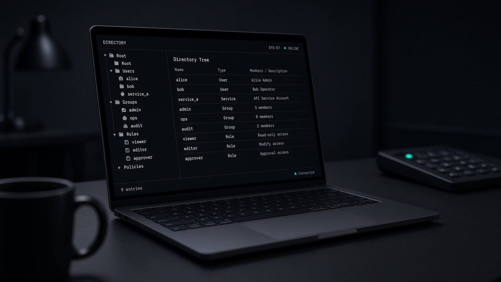

LabLDAP
LabLDAP
Browser UI
Users, groups, search, bind test, schema, audit, LDIF export, and a gated soft reset. Session cookie, not a token in localStorage.
LabLDAP stands up 389 Directory Server, applies a declarative scenario, then hands you REST, MCP, and a browser UI that share one authorization policy. Directory Manager is bootstrap-only.

In-memory mocks lie about the protocol. Raw directory containers leave Directory Manager in an environment variable for the rest of the afternoon. LabLDAP splits the job the way an operator would.
directory
Long-running 389 DS
Owns /data. Source of truth for users, groups, memberships, and passwords.
bootstrap
One-shot labldap-bootstrap
Uses Directory Manager from a secret file, applies the scenario, then exits.
control
Long-running labldap
Restricted service account. No DM secret. No Docker socket. Serves UI, REST, and MCP.
Create a user in the browser, fetch it over REST, bind with ldapsearch, and an agent can read it through MCP.
Users, groups, search, bind test, schema, audit, LDIF export, and a gated soft reset. Session cookie, not a token in localStorage.
Versioned OpenAPI at /api/v1. Revisions, problem documents, the same scopes as every other transport.
Streamable HTTP POST /mcp or labldap mcp-stdio. Reads on by default. Writes stay off until you enable them.
Docker Engine 24+ and Compose v2.24+. First run builds local images. Later runs reuse them.
secrets/token-admin.git clone https://github.com/hilather/go-lab-ldap-mcp.git
cd go-lab-ldap-mcp
make compose-up
TOKEN=$(tr -d '\n' < secrets/token-admin)
curl -sk -H "Authorization: Bearer $TOKEN" \
https://127.0.0.1:8443/api/v1/users| Surface | Address | Notes |
|---|---|---|
| UI / REST / MCP | 127.0.0.1:8443 | Lab TLS. Bearer or session cookie. |
| LDAP / StartTLS | 127.0.0.1:3389 | Simple bind as a directory user. |
| LDAPS | 127.0.0.1:3636 | Trust the generated lab CA. |
| Health | /health · /health/ready | Liveness never talks to LDAP. |
This is not a production identity system. The constraints are the product.
ldap://127.0.0.1:3389 is a real directory. The Go process is HTTPS only.